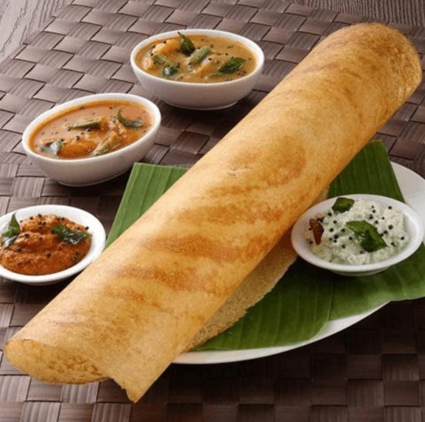

Dosa
Home
A dosa is a thin pancake in South Indian cuisine made from a fermented batter of ground black gram (lentil) and rice. Dosas have now become popular elsewhere in South Asia. Dosas are served hot, often with chutney and sambar.

Ingredients
3/4 cup Parboiled Rice
(idli-dosa rice)
1/2 cup Whole Urad Dal (without skin)
or Split Urad Dal (black lentils)
1/4 teaspoon Fenugreek Seeds
(methi dana)
1/2 tablespoon Chana Dal
(gram lentils), optional
Water, as needed
Salt to taste
Oil, for shallow frying
Nutrition Facts
Calories 210
Total Fat 4.1g
Calcium 16mg
Sodium 390mg
Total Carbohydrate 37.0g
Potassium 104mg
Iron 2.1mg
Procedure
Take all the ingredients to prepare the dosa batter. Rice, urad dal and fenugreek seeds are the main ingredients. Chana dal is used for getting a golden color for Dosa.
Rinse both types of rice (regular rice and parboiled rice) together in water for 3-4 times and soak them in 2 cups of water for 4-5 hours - (Place both types of rice in a medium-size bowl and fill it with water till 3/4th height. Rinse the rice by rubbing them between your fingertips; the water will turn cloudy. Drain the water and repeat the process 3-4 times).
Rinse urad dal and chana dal together in water, add fenugreek seeds and soak in 1 cup water for 4-5 hours.
Drain water from urad dal in a small bowl and reserve it (it will be used in the next step while grinding the dal). Add drained urad dal, chana dal and fenugreek seeds mixture in the medium jar of a mixer grinder or blender.
Add water as needed and grind until smooth and fluffy batter (use water reserved in previous step, approx. 1½ cups water will required to grind 1/2 cup dry urad dal).
The batter should be fluffy and not very thick. Transfer it to a large container.
Drain water from rice and add them to the same mixer grinder jar. Depending on the size of the jar, you can ground the rice in multiple batches.
Add water as needed and grind until smooth texture. Don’t add too much water in a single go; add 1-2 tablespoons water at a time (approx. 1/2 cup water will required). Rice requires less water compared to urad dal while grinding. Rice batter will be little grainy and will not be as smooth as urad dal batter. Transfer it to the same container having urad dal batter in it.
Add salt and mix both batters well using spoon. The final batter should not be too thick or too watery. Cover it with plate and leave it at room temperature for 8-10 hours or overnight for fermentation. During cold weather, keep the batter in warm place (or inside the oven with oven light on) for fermentation.
During fermentation, the batter volume would increase and the tiny bubbles would appear on the surface when you stir it with a spoon. Stir the batter with a spoon. If it looks too thick, add few tablespoons water and mix well until it has attained pouring consistency (little watery than idli batter).
Heat non-stick tava or iron tava (skillet or griddle) over medium flame. Sprinkle few drops of water on the surface. If water drops sizzle and evaporate within few seconds, tava is hot enough to cook. Apply 1/2-teaspoon oil on the griddle and spread it evenly with a spatula or a clean wet cloth. Take a ladle full of batter, pour it over the surface of tawa, swirl it as thin as possible in a spiral motion by rotating ladle and make it into round shape of approx. 7-8 inch diameter circle.
Apply 1-teaspoon oil (or ghee / butter for crispy dosa) around the edges of dosa (or spread oil/ghee/butter evenly with brush for crispy dosa).
Cook until the bottom surface turns light brown and the edges start to come upward, it will take around 2-minutes.
Flip it and cook for a minute. If you are making thin dosa (as shown in the photo), you do not need to cook the other side. Transfer it to a plate. Wipe tava with clean wet cloth before making next dosa (this is to prevent dosa from sticking to Pan) and repeat the process from step-11 to step-13 for remaining batter. Hot and crispy plain dosa is ready.
Serve them Hot with your favourite chutney (recommended groundnut or coconut) and sambar , Now Enjoy the Tasty South Indian Breakfast...!
Expert Guide
Back ←
Scroll to Top ↑